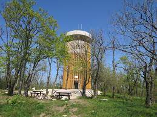
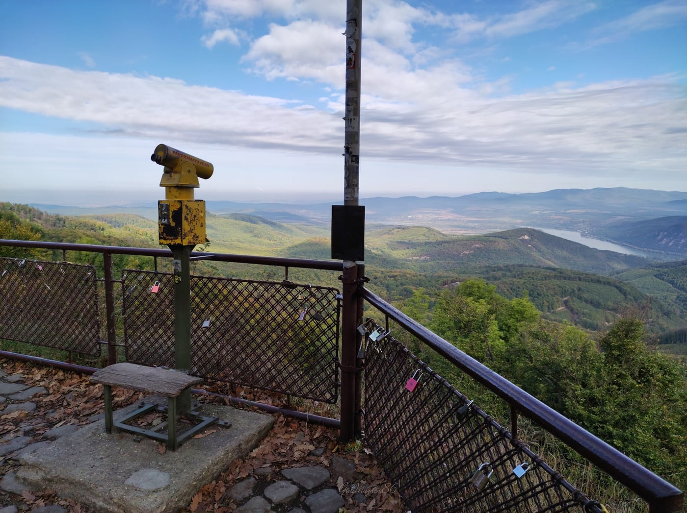
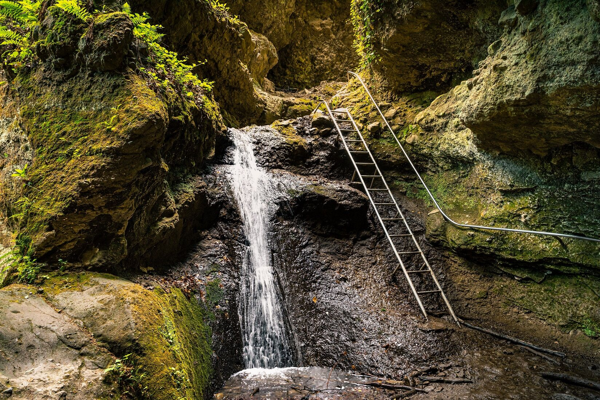

Pilis-tető

A Pilis-tető a Pilis hegység büszkesége, amely 757 méterrel kiemelkedik a Dunántúli-középhegység láncolatából. Ez a magaslat nem csupán a hegység, hanem az egész környező terület legmagasabb pontja, amely kiváló panorámát nyújt a Dunakanyarra és a távolabbi vidékekre. A hegység és a Pilis-tető különösen vonzó a természetkedvelők, túrázók és fotósok számára. Aki ide látogat, annak nem csak a lenyűgöző kilátásban lehet része, hanem a természet csodáiban is gyönyörködhet.
A terület geológiailag igencsak változatos, hiszen a mészkőből, dolomitból és egyéb kőzetekből álló táj számtalan érdekességet kínál. Barlangok, hasadékok és különféle eróziós formák gazdagítják a tájat. Néhány barlang, mint például a Pilisszántói-Kőlik-barlang, látogatható is, ahol a kíváncsi kirándulók a föld mélyének csodáit is felfedezhetik.
A Pilis-tető környezete az állat- és növényvilág szempontjából is különleges. A sűrű erdők, tisztások és mezei területek otthont adnak számos állatfajnak, köztük szarvasoknak, rókáknak, madaraknak és rovaroknak. A növényzetet főként az erdei bükkösök és tölgyerdők dominálják, azonban a fenyők és az aljvegetáció is jelentős részét képezik az ökoszisztémának. A tavasszal a virágzó hóvirágok és ibolyák, míg ősszel a változatos színű lombkoronák kínálnak felejthetetlen látványt a látogatóknak.
Dobogókő

Dobogókő a Pilis hegység egyik gyöngyszeme, mely 699 méteres magasságával kilátást nyújt a csodálatos Dunakanyarra, a Visegrádi-hegységre és az alatta húzódó festői tájra. A kilátópontok és sétányok számtalan lehetőséget kínálnak a látogatóknak a táj csodálására. Ezen túlmenően, sokan tartják Dobogókőt a térség energetikai központjának, ahol a Föld és az ég energiái találkoznak. A néphagyományok szerint itt "dobog" a Föld szíve, és sokan úgy vélik, hogy a helynek különleges gyógyító és energetizáló ereje van.
A geológiai és klimatikus jelenségek, mint a gyakori ködfelhők és a kristálytiszta égbolt, csak tovább növelik a hely varázsát. Dobogókő az év minden szakában kínál valami különlegeset: télen a hófödte táj és a sípályák, tavasszal a friss zöld lombkorona, nyáron a kellemes hűs levegő és ősszel a lombkorona színes pompája vonzza a látogatókat. A helyszínen számos túraútvonal, szálláshely, étterem és kávézó található, amelyek a kikapcsolódásra vágyóknak kínálnak különféle lehetőségeket.
Rám-szakadék

A Rám-szakadék a Pilis hegységben található, és az egyik legizgalmasabb természeti képződmény az országban. Ez a mély, szűk völgy a Rám-hegy oldalában húzódik, és az évezredek során az erózió által alakult ki a mészkősziklák között. A szakadék mentén húzódó ösvény valóságos kihívást jelent a túrázóknak, mivel sziklalépcsőkön, létrákon, hidakon és szűk hasadékokon át vezet. Az útvonalon keresztülhaladva a látogatók betekintést nyerhetnek a terület geológiai múltjába, és megcsodálhatják a sziklák által formált lenyűgöző formákat és alakzatokat.
A Rám-szakadék nem csak a kalandkeresők számára érdekes, hanem azok számára is, akik a természet csendjére és nyugalmára vágynak. A völgyben élő növény- és állatvilág rendkívül gazdag, és számos ritka fajnak ad otthont. Az erdős részek, patakok és vízesések teszik a helyet különösen festőivé. Nyáron a szakadék árnyékos, hűs környezete kellemes menedéket nyújt a hőség elől. Azok, akik szerencsések és időben érkeznek, még egy-egy szarvas vagy róka megpillantásának örömére is szert tehetnek. A Rám-szakadék a Pilis egyik kiemelkedő gyöngyszeme, melyet érdemes többször is felkeresni.